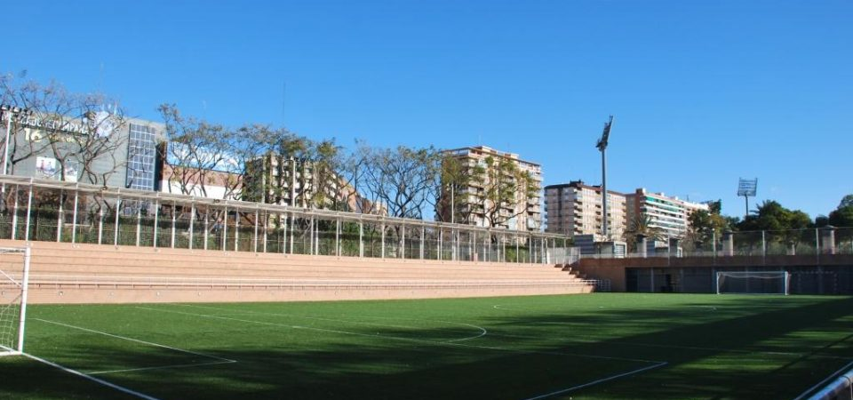

20
Equipos
190
Partidos
1
Pasión
Puro Fútbol
La mejor liga amateur de la ciudad. Competición reñida, fair play y tercer tiempo asegurado.
Estadísticas
Sigue la evolución de tu equipo. Clasificación en tiempo real, pichichi y resultados.
Simulador
Juega nuestro Modo Carrera interactivo. Gestiona, simula jornadas y lleva a tu equipo a la gloria.
Sede Oficial

Campo de Fútbol Río Turia Tramo III